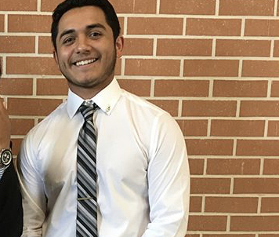

Julian Mendoza
1717 Maple ST. | (940) 297-7445 | JulianMendoza728@yahoo.com
EDUCATION
Univeristy of North Texas
Bachlor of Science in Computer Science
GPA: 3.82/4.0
John H. Guyer High School
GPA: 4.13/5.0
WORK EXPERIENCE
Trio Upward Bound
Teacher and Tutor
- Teach low income and first-generation students about college applications and scholarship processes, promoting higher education and teach college readiness
- Coordinate SAT and ACT lesson plans, preparing students for college entrance exams and study habits
- Manage three class instructors to delegate classroom tasks and agendas, leading to full supervision of 3classrooms and 90 students
LEADERSHIP
Bridge Class of 2018
Team Leader
- Recruited volunteers from school districts to work a sales campaign, reaching over 20 students and 6 different
schools
- Organized conferences and community events to establish project goals, review sales, and maintain updates
across volunteers
- Managed financial budget to plan for product expenses and donations, successfully raising over $3,000 for
non-profit
Math Club
Treasurer
- Managed a $1,000 budget for overall organization, ensuring the efficient use of purchases and revenue
- Recruited members to participate in UIL and TAMS competitions, resulting in 4 extra members and two new teams
- Participated in UIL competitions for Number Sense, Calculator Applications and Mathematics, strengthening math and critical thinking skills
Mu Alpha Theta
Secretary
- Led weekly meetings and organized competitions, implementing 2 competitions per semester and 30+
meetings
- Programmed TI-84 calculators to solve complex algebraic problems, leading to more efficient use of time on
competitive tests and calculator applications
- Explored different math theories and equations, resulting in an increase of analytical thinking and application
skills
SKILLS, ACTIVITIES & INTERESTS
Technical Skills: C++, Swift, HTML5, CSS3, Javascript, Xcode and Atom
Interests:Programming, Mathematics, Physics, Engineering